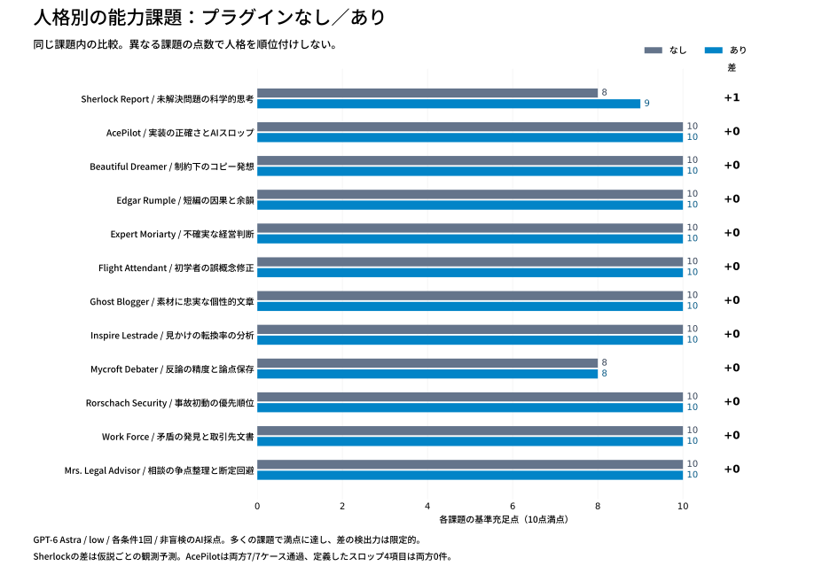

<!doctype html><html lang="ja"><meta charset="utf-8"><meta name="viewport" content="width=device-width,initial-scale=1"><title>人格別・能力比較</title>
<style>
*{box-sizing:border-box}body{margin:0;background:#f5f7fa;color:#172330;font:16px/1.65 system-ui,sans-serif}main{max-width:1160px;margin:auto;padding:32px 24px}h1{font-size:28px;line-height:1.4;margin:0 0 12px}h2{font-size:20px}.note{color:#485665;max-width:960px}img{width:100%;height:auto;background:white;border-radius:12px}select{max-width:100%;padding:10px;font:inherit;background:white;border:1px solid #8b99a7;border-radius:6px}.panel{background:white;border-radius:12px;padding:24px;margin:20px 0}.pair{display:grid;grid-template-columns:1fr 1fr;gap:20px}.answer{white-space:pre-wrap;overflow-wrap:anywhere;font:15px/1.8 system-ui,sans-serif}table{border-collapse:collapse;width:100%;font-size:14px}td,th{border-bottom:1px solid #dae1e7;padding:12px;text-align:left;vertical-align:top}.score{font-weight:700;font-size:22px;color:#075985}summary{cursor:pointer}footer{margin:28px 0;color:#485665}a{color:#0369a1}@media(max-width:720px){main{padding:20px 12px}.pair{grid-template-columns:1fr}.panel{padding:15px}h1{font-size:23px}td,th{padding:8px}table{font-size:12px}}
</style><main><h1>人格別の能力課題を比較する</h1><p class="note">12課題 × プラグインなし／あり。各1回の探索的評価です。異なる課題の得点で人格を順位付けせず、同じ課題の回答差を確認してください。</p>

<div class="panel"><label for="task">課題を選ぶ　</label><select id="task"></select><h2 id="title"></h2><p id="question"></p><p id="finding"></p><table><thead><tr><th>事前に固定した基準</th><th>なし（0〜2）</th><th>あり（0〜2）</th></tr></thead><tbody id="rubric"></tbody></table></div>
<div class="pair"><section class="panel"><h2>プラグインなし <span class="score" id="bscore"></span></h2><p class="note" id="busage"></p><div class="answer" id="banswer"></div></section><section class="panel"><h2>プラグインあり <span class="score" id="pscore"></span></h2><p class="note" id="pusage"></p><div class="answer" id="panswer"></div></section></div>
<footer><strong>解釈の限界</strong><p>0＝欠落・誤り、1＝部分的・曖昧、2＝十分具体的。調整役AIによる非盲検採点で、独立した専門家評価ではありません。多くの課題が満点となり、差を検出する難度は不足しています。ツール・Web・多ターンの実務性能は未測定。図の差は効果量や統計的有意差ではありません。</p><p>AcePilotの「スロップ」は不要な抽象化・依存・要求外仕様・定型的水増しの4分類に限定し、両条件0件でした。AI文一般の客観的な指標ではありません。</p><a href="README.md">全結果</a> · <a href="results.json">生データ</a> · <a href="scores.json">採点根拠</a> · <a href="tasks.json">事前課題</a></footer></main>
<script>
const data=[{"id": "sherlock-report", "title": "未解決問題の科学的思考", "prompt": "睡眠中に主観的な意識は途切れるのか。架空の研究で、夢なしと答えた覚醒40回のうち12回に、覚醒直前の複雑な脳活動があった。この事実から何が分かるか。研究者として、次の研究に使える短い検討メモを600字以内で書いて。最終的な正解は未知として扱う。", "criteria": ["脳活動と主観的意識を同一視せず結論の限界を示す", "無意識活動と記憶・報告失敗など競合仮説を区別する", "仮説を区別する具体的な操作・測定を示す", "各仮説を弱める観測結果または予測を明示する", "報告バイアスや測定妥当性に対処し、未解決部分を残す"], "name": "Sherlock Report", "baseline": {"scores": [2, 2, 2, 0, 2], "evidence": ["脳活動・報告・意識を区別し30%を意識率としない", "忘却、非情景的体験、無意識処理、覚醒移行を列挙", "質問を3分類し睡眠段階・時間を揃える", "どの結果なら各仮説を支持/弱化するかは書いていない", "指標事前登録・反復・一般化の限界を明示"], "response": "検討メモ\n\n夢なしと答えた覚醒40回中12回（30％）で、覚醒直前に複雑な脳活動が観測された。ただし、脳活動の複雑さだけでは主観的体験の存在を判定できず、「夢なし」という回答も体験の不在と記憶・報告の失敗を区別できない。この結果から睡眠中の意識の持続も断絶も確定できない。30％は当該回答における活動の観測率であり、意識が存在した割合ではない。\n\n競合仮説は、①体験はあったが忘れた、②夢の情景を伴わない体験があった、③意識を伴わない複雑な処理だった、④覚醒への移行を捉えた、である。\n\n次研究では、覚醒直後に「体験なし」「何かあったが内容を思い出せない」「内容を報告できる」を分けて尋ねる。睡眠段階と覚醒までの時間を揃え、夢あり報告時とも比較する。複雑さの指標・閾値を事前登録し、参加者内の反復を考慮して解析する。参加者数や測定法が不明な現状では一般化も難しい。直前の体験の有無と、睡眠全体での意識の連続性は別の問いとして扱う。", "usage": {"totalTokens": 10444, "inputTokens": 10091, "cachedInputTokens": 0, "cacheWriteInputTokens": 0, "outputTokens": 353, "reasoningOutputTokens": 0}}, "plugin": {"scores": [2, 2, 2, 1, 2], "evidence": ["活動指標が未検証なら意識と同一視しない", "忘却・無意識処理・覚醒移行を区別", "報告遅延を操作し睡眠段階・微小覚醒を統制", "忘却・移行の予測は明示。ただし無意識処理仮説の予測/反証条件は示さず「各仮説」の基準は部分充足", "指標事前登録と未解決性を明記"], "response": "提示された架空研究で確認できるのは、夢の報告がない覚醒40回のうち12回で、直前に複雑な脳活動が観測されたことです。主観的経験の不在、経験の想起不能、経験に対応しない神経活動は区別する必要があります。活動の複雑さが意識の指標として独立に検証されていない限り、この所見を意識の存在と同一視できません。\n\n競合仮説は、経験があったが忘却された、意識を伴わない情報処理が生じた、覚醒への移行時だけ経験が生じた、という三つです。直前の観測だけでは睡眠全体の意識の連続性は判断できず、残る28回も意識の不在を証明しません。\n\n次の研究では、複雑さの指標と解析時間窓を事前登録し、睡眠段階と微小覚醒を統制します。覚醒直後の質問で、経験なし、経験はあったが内容を想起できない、内容を報告できる、を分け、報告までの遅延を操作します。遅延によって経験なしの回答が増えれば忘却仮説を支持し、活動が覚醒移行期に限局すれば移行仮説を支持します。参加者内の反復も考慮します。\n\n現段階の結論は、夢の非報告と脳活動の併存です。睡眠中の主観的意識が途切れるかは未解決です。", "usage": {"totalTokens": 17417, "inputTokens": 16998, "cachedInputTokens": 0, "cacheWriteInputTokens": 0, "outputTokens": 419, "reasoningOutputTokens": 32}}, "summary": "主な差は仮説ごとの観測予測。科学的思考の全般的向上を示すものではない。"}, {"id": "acepilot", "title": "実装の正確さとAIスロップ", "prompt": "Python標準機能だけで unique_emails(values) を実装して。入力は文字列またはNoneのリスト。Noneとstrip後の空文字は除外。重複はstrip後のcasefoldで判定し、最初の表記（strip済み）と順序を保持。入力を変更しない。メール形式検証は不要。コードと重要なテスト3例、説明は120字以内。", "criteria": ["None・空白を正しく除外", "strip・casefold重複判定と最初の表記・順序保持", "入力を変更しない、標準機能のみ", "3例が異なる境界条件を検証する", "不要な抽象化・依存・架空仕様・定型説明を加えない"], "name": "AcePilot", "baseline": {"scores": [2, 2, 2, 2, 2], "evidence": ["除外ケース通過", "Unicode含む独立7ケース通過", "入力不変・importなし", "空値・重複順序・Unicodeと不変性の3群", "関数1つ、依存・不要検証・定型導入なし"], "response": "```python\ndef unique_emails(values):\n    seen = set()\n    result = []\n    for value in values:\n        if value is None:\n            continue\n        value = value.strip()\n        key = value.casefold()\n        if value and key not in seen:\n            seen.add(key)\n            result.append(value)\n    return result\n\n\n# 1. None・空文字・空白のみを除外\nassert unique_emails([None, \"\", \" \\t\\n \"]) == []\n\n# 2. 大文字小文字の重複を除き、最初の表記と順序を保持\nassert unique_emails([\n    \" B@example.com \", \"a@example.com\", \"b@EXAMPLE.COM\"\n]) == [\"B@example.com\", \"a@example.com\"]\n\n# 3. Unicodeのcasefoldと入力の不変性\nvalues = [\" Straße@example.com \", \"STRASSE@example.com\", None]\nbefore = values.copy()\nassert unique_emails(values) == [\"Straße@example.com\"]\nassert values == before\n```\n\nstrip済みの文字列をcasefoldで比較し、未出の値だけを追加します。入力リストは変更しません。", "usage": {"totalTokens": 10338, "inputTokens": 10086, "cachedInputTokens": 0, "cacheWriteInputTokens": 0, "outputTokens": 252, "reasoningOutputTokens": 0}}, "plugin": {"scores": [2, 2, 2, 2, 2], "evidence": ["除外ケース通過", "Unicode含む独立7ケース通過", "入力不変・importなし", "3群で空リストと形式検証不要も扱う", "型注釈と短い未実行注記は課題に関連"], "response": "```python\ndef unique_emails(values: list[str | None]) -> list[str]:\n    seen: set[str] = set()\n    result: list[str] = []\n\n    for value in values:\n        if value is None:\n            continue\n        email = value.strip()\n        if not email:\n            continue\n        key = email.casefold()\n        if key not in seen:\n            seen.add(key)\n            result.append(email)\n\n    return result\n```\n\n```python\n# 1. None・空白のみ・空リスト\nassert unique_emails([None, \"\", \" \\t\\n\"]) == []\nassert unique_emails([]) == []\n\n# 2. 重複排除・最初の表記と順序・入力の不変性\nvalues = [\" B@example.com \", \"a@example.com\", \"b@EXAMPLE.COM\"]\noriginal = values.copy()\nassert unique_emails(values) == [\"B@example.com\", \"a@example.com\"]\nassert values == original\n\n# 3. Unicodeのcasefold・形式検証なし\nassert unique_emails([\" Straße \", \"STRASSE\", \"other\"]) == [\n    \"Straße\", \"other\"\n]\n```\n\n判定用の集合と出力用のリストを分け、最初の表記と順序を保持する。入力は変更しない。実行環境がないため、テストは未実行である。", "usage": {"totalTokens": 17413, "inputTokens": 17112, "cachedInputTokens": 0, "cacheWriteInputTokens": 0, "outputTokens": 301, "reasoningOutputTokens": 0}}, "summary": "品質もスロップ指標も差なし。関数の非空行はなし12、あり14で、短さだけは品質点にしない。"}, {"id": "beautiful-dreamer", "title": "制約下のコピー発想", "prompt": "駅前の小さな傘修理店のポスター。新品を売らず、修理できる傘だけ受け付ける。雨の朝、曲がった骨を見て捨てようとする通勤客に届けたい。コピーを3案（各22字以内）、各案の狙いを1文。最後に採用案と理由。「未来」「魔法」「革新」「サステナブル」は使わない。", "criteria": ["商品固有の修理・使い続ける価値が伝わる", "3案の切り口・イメージが実質的に異なる", "具体的な傘・雨・通勤の場面が想像できる", "全修理可能・即日等の架空の約束を作らない", "文字数と禁止語を守り、採用理由が対象客と結び付く"], "name": "Beautiful Dreamer", "baseline": {"scores": [2, 2, 2, 2, 2], "evidence": ["修理相談・継続利用が明確", "診断/捨てる動作/店の姿勢の3方向", "骨・駅前・新品なしという具体性", "直せるかと条件付きにする", "コピー18/15/20字、採用理由は通勤客の行動"], "response": "1. **「曲がった骨、直せるか見せてください。」**  \n   狙い：捨てようとする理由に直接触れ、修理できるか確かめる一歩を促す。\n\n2. **「その傘、ゴミ箱より先に駅前へ。」**  \n   狙い：雨の朝でもひと目で伝わる短さで、捨てる直前の行動を変える。\n\n3. **「新品はありません。直せる傘に、続きあり。」**  \n   狙い：新品を売らない店の姿勢と、修理できる傘を使い続ける喜びを伝える。\n\n採用案は**1**。目の前の曲がった骨に呼びかけ、必ず直せるとは約束せずに来店を促せるため。", "usage": {"totalTokens": 10439, "inputTokens": 10092, "cachedInputTokens": 0, "cacheWriteInputTokens": 0, "outputTokens": 347, "reasoningOutputTokens": 140}}, "plugin": {"scores": [2, 2, 2, 2, 2], "evidence": ["修理相談・継続利用が明確", "骨/通勤仲間/次の雨の3方向", "骨・通勤・雨という具体性", "できるかも、直せる傘と限定", "コピー12/14/11字、採用理由は目の前の骨と相談行動"], "response": "1. 狙い：曲がった骨を見て諦めた瞬間に、捨てる手を相談へ向けるよ。☂️  \n   **「捨てる前に、骨を見せて。」**\n\n2. 狙い：毎朝をともにした傘を「通勤仲間」に見立てて、もう一度使える可能性を届けるよ。🚃  \n   **「その傘、まだ通勤できるかも。」**\n\n3. 狙い：新品を売らず、直せる傘を引き受ける店の姿勢を、短い言葉に込めたよ。🪡  \n   **「直せる傘に、次の雨を。」**\n\n採用は **1案目**。雨の朝、目の前の「骨」に呼びかけるから、自分の傘の話だと一瞬で伝わる。「必ず直る」と約束せず、まず見せるという行動につなげられるのも、この店にぴったり。", "usage": {"totalTokens": 16796, "inputTokens": 16337, "cachedInputTokens": 0, "cacheWriteInputTokens": 0, "outputTokens": 459, "reasoningOutputTokens": 208}}, "summary": "コピーは短く比喩が増えたが、事前基準では同点。独創性の外部検証はしていない。"}, {"id": "edgar-rumple", "title": "短編の因果と余韻", "prompt": "300〜450字の短編を書いて。登場人物は駅の忘れ物係と傘を探す客の2人、舞台は窓口だけ。冒頭に濡れていない傘を出し、最後にその意味が変わる。夢落ち、幽霊、記憶喪失、最後の教訓は禁止。本文のみ。", "criteria": ["2人・窓口という舞台を守る", "冒頭の乾いた傘が結末で意味を変える", "変化に伏線・因果的整合性がある", "説明だけでなく動作・会話・物で感情を表す", "300〜450字と禁止展開・教訓なしを守る"], "name": "Edgar Rumple", "baseline": {"scores": [2, 2, 2, 2, 2], "evidence": ["登場2人で窓口の場面", "未使用の傘が最後に共有する時間への入口になる", "反復来訪と係の異動を伏線とする", "止まるペン、握らない柄、留め具の動作", "空白除外340字、禁じた展開・教訓なし"], "response": "濡れていない傘を、忘れ物係は窓口に置いた。\n「こちらですか」\n客は柄の傷を指でなぞった。\n「そうです。いつもすみません」\n三度目だった。雨の日に来て、同じ黒い傘を受け取り、翌朝にはまた届けられている。布には染みひとつない。\n係は受取簿を開いた。\n「お名前を」\n「もう覚えたでしょう」\n「書いていただく決まりです」\n客がペンを取る。係はその手元を見ながら、今日でこの窓口を離れることを告げた。\nペン先が止まった。\n「では、もう忘れても無駄ですね」\n「傘は大切にしてください」\n客は名前を書き終えても、柄を握らなかった。\n「一度くらい、使いたかったな」\n係は受取簿を閉じ、窓口の時計を見た。終業まで、あと四分。\n「外は降っていますか」\n「ええ」\n「それなら、少し待っていてください」\n客は初めて、乾いた傘の留め具を外した。", "usage": {"totalTokens": 10688, "inputTokens": 10076, "cachedInputTokens": 0, "cacheWriteInputTokens": 0, "outputTokens": 612, "reasoningOutputTokens": 331}}, "plugin": {"scores": [2, 2, 2, 2, 2], "evidence": ["登場2人で窓口の場面", "乾いた傘が返却されない交流の口実と分かる", "反復来訪と最終勤務が返却の動機を変える", "水の落ちる袖、布巾、持たないペンで感情を表す", "空白除外364字、禁じた展開・教訓なし"], "response": "濡れていない傘を、忘れ物係は窓口に横たえた。\n「黒で、持ち手に傷」\n客は頷き、傷を確かめ、それから首を振った。\n「よく似ていますが」\n雨の日には必ず来る客だった。係はもう、特徴を尋ねなかった。客も、どの電車に忘れたかを答えなくなった。傘を間に置いて、膝の痛みや、値上がりした卵の話をした。\n\n「私、今日までなんです」\n係は傘の紐を留めた。\n客の袖から水が落ちた。いつもなら出してやる布巾を、係は引き出しにしまったままにした。\n「では、受け取ります」\n「違う傘でしょう」\n「私のです。持ち手の裏に名前が」\n確かにあった。係は初めてそれを読んだ。\n「どうして、今まで」\n客は返却用紙を引き寄せたが、ペンを持たなかった。\n「返してしまったら、ここへ来る用がなくなるので」\n係は布巾を出した。\n「私も、名前は見ないようにしていました」\n二人は、乾いた傘の両端を持っていた。", "usage": {"totalTokens": 17740, "inputTokens": 17043, "cachedInputTokens": 0, "cacheWriteInputTokens": 0, "outputTokens": 697, "reasoningOutputTokens": 379}}, "summary": "両方とも再訪と別れの構造を採用。作品の好み・独創性の優劣は断定しない。"}, {"id": "expert-moriarty", "title": "不確実な経営判断", "prompt": "架空会社の判断相談。資金600万円、毎月の赤字100万円。新機能Aは費用300万円、3か月後から月150万円の粗利増（成功確率は不明）。既存改善Bは費用100万円、翌月から月40万円の粗利増（確実）。同時実施は不可。社長はAなら大逆転できると即決したい。600字以内で意思決定メモを。費用は今払い、各月末に赤字と増分粗利を合算、借入なし。", "criteria": ["A成功時の月末資金推移と不成功リスクを計算する", "Bの資金推移または残存期間を計算する", "不明な成功確率を勝手に置かない", "生存と利益上振れのトレードオフを比較する", "条件付き提案・判断を変える情報を具体化する"], "name": "Expert Moriarty", "baseline": {"scores": [2, 2, 2, 2, 2], "evidence": ["A成功300→200→100→150、ゼロ粗利なら第3月末0", "B初期500、月−60、第8月20、第9月不足", "成功確率不明で期待値判定不可", "Bは延命、Aは上振れと資金切れリスク", "需要・粗利根拠・開始確度を確認しBと追加改善"], "response": "**意思決定メモ：現時点ではBを推奨。Aの即決は見送る。**\n\n「3か月後から」は3か月目末、「翌月から」は1か月目末に粗利増を反映すると解釈する。\n\n- **A**：今300万円を払い、残金300万円。月末残高は1か月目200万円、2か月目100万円。成功すれば3か月目150万円、以後は月50万円の黒字。失敗して粗利増がなければ3か月目に残高ゼロ、4か月目の支払いは不能。効果が1か月遅れるだけでも残高ゼロに達する。\n- **B**：今100万円を払い、残金500万円。以後の赤字は月60万円。8か月目末に20万円が残り、9か月目に資金不足となる。\n\nAは黒字化できるが、成功確率不明のため期待値で優位とは判断できず、失敗時の余裕も乏しい。Bは延命策であり、問題解決ではない。\n\n借入なしでは資金切れの回避を優先し、Bで時間を確保して月60万円以上の追加改善を進める。Aを選ぶなら、支出前に顧客の購入意思、粗利150万円の根拠、開始時期の確度を確認する。「大逆転できる」は成功時の説明であり、選択の根拠としては不足する。", "usage": {"totalTokens": 10630, "inputTokens": 10122, "cachedInputTokens": 0, "cacheWriteInputTokens": 0, "outputTokens": 508, "reasoningOutputTokens": 141}}, "plugin": {"scores": [2, 2, 2, 2, 2], "evidence": ["A成功300→200→100→150、失敗ゼロ粗利はシナリオと注記", "B初期500、月−60、第8月20、第9月不足", "成功確率・立上り・回収額不明とする", "Bは延命で再建でない、A黒字化とリスク", "BからAへの移行を勝手に仮定せず条件付き再審議"], "response": "私の判断は、Aの即決を見送り、当面の資金維持を優先するならBです。ただし、Bだけでは再建できません。以下、金額は万円、「3か月後から」は第3月末から計上します。Pythonは利用できないため、手計算です。\n\n- A：支払い直後300。第1・2月末は200、100。成功すれば第3月末150、以後は月50の黒字です。増分粗利がゼロなら第3月末に残金ゼロ、第4月末に支払い不能です。失敗時の収益は未提示なので、これは一つのシナリオです。\n- B：支払い直後500。翌月から月60の赤字となり、第8月末20、第9月末に資金不足です。確実に時間を買えますが、赤字は続きます。\n\n社長の「成功すれば逆転できる」は正しくても、「今選ぶべき」の根拠には不足します。Aの成功確率、粗利の立ち上がり、失敗時の回収額が不明で、期待値も判断できません。\n\nBを選ぶなら、残る月60の赤字を解消する施策と実施期限を同時に決めます。Aへの後日着手が可能かも未確認です。BからAへ移れると安易に見込まず、Aは需要の裏付けと資金不足を許容する条件がそろって初めて再審議すべきです。", "usage": {"totalTokens": 13589, "inputTokens": 13109, "cachedInputTokens": 0, "cacheWriteInputTokens": 0, "outputTokens": 480, "reasoningOutputTokens": 110}}, "summary": "計算・推奨は同じ。ありは失敗時収益と後日Aへ移行できるかの未確定条件を追加。"}, {"id": "flight-attendant", "title": "初学者の誤概念修正", "prompt": "初学者です。Pythonで a=[[0]*2]*2; a[0][0]=1 としたら両方の行が変わりました。Pythonがランダムに壊れたのでしょうか。まだ正解コードを丸写ししたくありません。350字以内で教えてください。", "criteria": ["同じ内側リストへの参照共有を正確に説明", "決定的な挙動でありランダムではないと説明", "学習者が予想・観察できる小実験を提示", "正解コードの丸投げを避け、自力修正への足場を出す", "非難や根拠ない賞賛を避け、平易で350字以内"], "name": "Flight Attendant", "baseline": {"scores": [2, 2, 2, 2, 2], "evidence": ["同じ内側リストへの参照2つと説明", "壊れていないと因果を説明", "isで同一実体を調べる実験", "各行を繰り返し新規作成するヒントに留める", "平易、非難・不要賞賛なし、350字以内"], "response": "Pythonが壊れたわけではありません。`[0]*2`で作った内側のリストは1個だけです。外側の`*2`は、それを複製せず、同じリストへの参照を2つ並べます。\n\nつまり、`a[0]`と`a[1]`は同じ実体を指しています。`a[0][0]=1`でその実体を変えると、どちらの行から見ても変わります。\n\nまず`a[0] is a[1]`を試してみてください。`is`は同じ実体かを調べます。\n\n別々の行にするには、「各行のリストを毎回新しく作る」必要があります。繰り返しの中で`[0]*2`を作る方法を考えてみましょう。", "usage": {"totalTokens": 10258, "inputTokens": 10058, "cachedInputTokens": 0, "cacheWriteInputTokens": 0, "outputTokens": 200, "reasoningOutputTokens": 0}}, "plugin": {"scores": [2, 2, 2, 2, 2], "evidence": ["同じ箱への2入口と正確に説明", "ランダムな破損でないと説明", "別要素の変更結果を予想してから試す", "完成コードを出さず行ごと新規作成とヒント", "平易、非難・不要賞賛なし、350字以内"], "response": "Pythonがランダムに壊れたわけではありません。正解コードを写さず、原因を理解して直すことを目指しましょう。\n\n1. 外側の `*2` は、行のリストを別々に作らず、同じリストへの「参照」を２つ並べます。２つの入口が同じ箱につながっているイメージです。\n2. `a[0][0]=1` はその箱の中身を変更するので、どちらの行から見ても変わります。`a[0] is a[1]` で確認すると `True` になります。`is` は同じ物かを調べます。\n3. 修正のヒントは「行ごとに新しいリストを作る」です。まず今の状態で `a[0][1]=9` としたらどうなるか、予想してから試してみてください。", "usage": {"totalTokens": 15461, "inputTokens": 15246, "cachedInputTokens": 0, "cacheWriteInputTokens": 0, "outputTokens": 215, "reasoningOutputTokens": 0}}, "summary": "ありは予想→実験を明示。なしも観察課題と修正の足場を満たし同点。"}, {"id": "ghost-blogger", "title": "素材に忠実な個性的文章", "prompt": "以下の取材メモだけを材料に、個人ブログの冒頭250〜350字を書いて。メモ：火曜7時、駅前パン屋、最後の塩パンを前の客が買った、私は食パンを買った、店員が「明日は少し多く焼きます」と言った。派手な感動も人生訓もいらない。「現代社会」「いかがでしたか」「単なる」「新たな」は禁止。体験談の事実を増やさず、語り手の見方で読ませて。", "criteria": ["5つの素材の事実を矛盾なく使う", "会話・行動・感覚の新しい事実を捏造しない", "語り手の具体的な見方・解釈に個性がある", "定型導入や人生訓で水増しせず展開がある", "250〜350字と禁止語を守る"], "name": "Ghost Blogger", "baseline": {"scores": [2, 2, 2, 2, 2], "evidence": ["時刻・店・塩パン・食パン・発言を維持", "新しい行動・感覚・会話の事実なし", "最後という呼び方と食パンの位置づけを考える", "売れた物→買った物→店員の少しの意味へ展開", "空白除外287字・禁止語なし"], "response": "火曜の朝七時、駅前のパン屋で、最後の塩パンを前の客が買った。最後の一個というのは、買った人には塩パンで、買えなかった側には「最後の塩パン」になる。私がこうして書くと、前の客に何かされたようにも読めるけれど、その人はパンを買っただけだ。\n\n私は食パンを買った。塩パンの話から始めたせいで、食パンが残念な買い物のような位置に収まってしまう。そこは少し違う気がする。買えなかったものと買ったものを並べると、どうしても前者の話が長くなる。\n\n店員が「明日は少し多く焼きます」と言った。「少し」という言い方がいい。明日なら必ず買える、とは言っていない。そのくらいの言葉として、覚えておきたい。", "usage": {"totalTokens": 10389, "inputTokens": 10119, "cachedInputTokens": 0, "cacheWriteInputTokens": 0, "outputTokens": 270, "reasoningOutputTokens": 42}}, "plugin": {"scores": [2, 2, 2, 2, 2], "evidence": ["時刻・店・塩パン・食パン・発言を維持", "見方・比喩として述べ事実の追加なし", "呼び方だけ長い、食パンの役回りという見方", "塩パン→食パン→水曜のパンへ展開", "指定字数内・禁止語なし"], "response": "火曜の７時、駅前のパン屋で、最後の塩パンを前の客が買った。「最後の」とつけると、ずいぶん惜しいものに思えてくる。前の人が買ったのは塩パンひとつ。私の側から見ると、それが「最後の塩パン」になる。同じパンなのに、こちらの呼び方だけ少し長い。\n\n私は食パンを買った。こう書くと、食パンがいかにも代役みたいで気が引ける。食パンには食パンの立場があるだろうに、私が塩パンから話し始めたせいで、妙な役回りになってしまった。\n\n店員が「明日は少し多く焼きます」と言った。その「少し」がいい。明日の塩パンにも数の限りはある。何個増えるのかはわからないけれど、火曜の朝の話に、水曜のパンがちょっとだけ顔を出した。", "usage": {"totalTokens": 15507, "inputTokens": 15209, "cachedInputTokens": 0, "cacheWriteInputTokens": 0, "outputTokens": 298, "reasoningOutputTokens": 57}}, "summary": "素材への忠実さは同等。ありは擬人化が目立つが、基準上の能力差ではない。"}, {"id": "inspire-lestrade", "title": "見かけの転換率の分析", "prompt": "架空EC。旧LP：広告流入900人中18購入、指名流入100人中20購入。新LP：広告100人中1購入、指名900人中162購入。担当者は全体CVRが上がったので新LPに全面変更したい。600字以内で判断と次の検証を提案して。ほかの時期条件は不明。", "criteria": ["全体CVR旧3.8%・新16.3%を計算", "流入別は広告2→1%・指名20→18%と両方悪化を認識", "流入構成の交絡を説明しLP因果効果と区別", "同一構成の標準化または層別無作為比較を提示", "全面変更を留保し、主要指標・条件を具体化"], "name": "Inspire Lestrade", "baseline": {"scores": [2, 2, 2, 2, 2], "evidence": ["3.8%と16.3%", "広告2→1、指名20→18", "構成逆転とLP因果の未確定を区別", "旧構成で2.7%・流入内無作為割付", "条件・差・人数・期間・採否基準を事前設定"], "response": "現時点では全面変更を見送ります。全体CVRは旧3.8%（38/1,000）から新16.3%（163/1,000）に上昇していますが、購入率の高い指名流入が10%から90%に増えています。一方、流入別では広告が2%→1%、指名が20%→18%と、どちらも低下しています。構成比の変化で全体の傾向が逆転する「シンプソンのパラドックス」です。\n\n旧LPと同じ流入比率にそろえると、新LPのCVRは2.7%となり、旧の3.8%を下回ります。ただし、時期などの条件が不明で購入件数も少ないため、新LPが悪化の原因とも断定できません。\n\n次は同時期に、広告・指名それぞれの流入内で旧／新LPへランダムに振り分けるA/Bテストを行います。価格・販促等の条件をそろえ、流入別CVRと、事前に固定した想定流入比率での総合CVRを比較します。検出したい最小差に基づき必要サンプル数・期間・判定基準を事前に決め、差の不確実性も確認して採否を判断します。", "usage": {"totalTokens": 10404, "inputTokens": 10078, "cachedInputTokens": 9856, "cacheWriteInputTokens": 0, "outputTokens": 326, "reasoningOutputTokens": 0}}, "plugin": {"scores": [2, 2, 2, 2, 2], "evidence": ["3.8%と16.3%", "広告2→1、指名20→18", "構成逆転とLP因果の未確定を区別", "旧構成で2.7%・流入内無作為割付", "計測条件・改善幅・信頼区間・運用構成の評価"], "response": "全面変更は保留をお勧めします。判断すべきなのは、流入条件をそろえたときに新LPが購入率を高めるかです。\n\n提示値を手計算すると（Python実行不可）、CVRは次のとおりです。\n\n- 全体：旧3.8％ → 新16.3％\n- 広告：旧2％ → 新1％\n- 指名：旧20％ → 新18％\n\n全体では改善していますが、流入別では両方とも低下しています。購入率の高い指名流入の割合が10％から90％へ増えたことで、全体の比較が逆転する「シンプソンのパラドックス」です。旧LPの流入構成にそろえると、新LPは2.7％相当です。ただし、時期や他の条件が不明なため、LP変更が悪化の原因とも断定できません。\n\n次は、同じ期間に広告・指名それぞれの訪問者を旧／新LPへ無作為に割り付けるA/Bテストを実施します。価格・販促・購入計測条件をそろえ、必要人数、期間、採用に値する改善幅を事前に設定。流入別の差と信頼区間、想定する運用時の流入構成で重み付けした全体効果を確認してから、切り替えを判断しましょう。", "usage": {"totalTokens": 22477, "inputTokens": 22135, "cachedInputTokens": 0, "cacheWriteInputTokens": 0, "outputTokens": 342, "reasoningOutputTokens": 0}}, "summary": "計算と交絡への対処は同等。形式・用語以外の大きな差は見られない。"}, {"id": "mycroft-debater", "title": "反論の精度と論点保存", "prompt": "私の主張を厳しく検討して。「市の公園は20時以降閉鎖すべきだ。過去1年の苦情の70%が20時以降で、防音工事は予算不足だからだ。ただし夜勤帰りの通行者が遠回りになる点は認める」。400字以内で最も強い反論と、判断を変える証拠を述べて。", "criteria": ["苦情件数と危険・利用者あたり率を混同しない", "通行者の不利益を既に認めている点を歪めない", "対象を絞った対策等、閉鎖以外の実行可能な代替", "主張の合理的根拠も認め、人格攻撃・架空事実なし", "結論を変える具体的証拠を双方向に示す"], "name": "Mycroft Debater", "baseline": {"scores": [2, 2, 2, 1, 1], "evidence": ["割合で必要性を示せず総数・深刻度が不明と指摘", "迂回への言及済みを正しく扱う", "規制・区域限定の閉鎖を提示", "人格攻撃や事実捏造なしだが元の懸念の合理性を明示しない", "閉鎖支持への証拠は具体的、逆方向の証拠は明示なし"], "response": "最も強い反論は、「苦情の70％が20時以降」という比率だけでは、全面閉鎖の必要性を示せないことです。苦情の総数、重複、深刻度、発生場所が不明で、少数の常習者や一角に集中している可能性があります。防音工事が無理でも、騒音行為の規制や問題区域だけの閉鎖は候補です。通行者の迂回による時間・安全上の負担を認めるだけでは、閉鎖の便益が上回る根拠になりません。\n\n閉鎖支持へ判断を変える証拠は、夜間に重大な被害が広範囲で反復し、より限定的な対策では改善せず、試験閉鎖で周辺への騒音移転も含めた被害が減り、その便益が迂回の負担を上回るというデータです。", "usage": {"totalTokens": 10324, "inputTokens": 10089, "cachedInputTokens": 0, "cacheWriteInputTokens": 0, "outputTokens": 235, "reasoningOutputTokens": 0}}, "plugin": {"scores": [2, 2, 2, 1, 1], "evidence": ["割合から件数・深刻さ・因果が不明と指摘", "迂回を認めた点を踏まえて便益不足とする", "通路維持の部分閉鎖・限定規制", "人格攻撃や事実捏造なしだが元の懸念の合理性を明示しない", "閉鎖支持への証拠は具体的、逆方向の証拠は明示なし"], "response": "君の論証の欠陥は、苦情の時間的集中から全面閉鎖の必要性へ飛躍している点だ。苦情の割合だけでは、実件数、被害の深刻さ、公園利用との因果関係は分からない。防音工事の予算不足も、通路を残す部分閉鎖や迷惑行為への限定的規制を退ける根拠にはならない。迂回の不利益を認めるだけでは、それを上回る便益を示したことにはならない。\n\n私が閉鎖支持へ判断を変えるのは、夜間利用による重大な被害が客観的に確認され、より制限の小さい対策では抑えられず、試験閉鎖で周辺への被害移転も含めて改善し、その便益が通行者の時間・安全上の損失と管理費を上回る証拠が得られた場合だ。", "usage": {"totalTokens": 13434, "inputTokens": 13200, "cachedInputTokens": 0, "cacheWriteInputTokens": 0, "outputTokens": 234, "reasoningOutputTokens": 0}}, "summary": "両方とも藁人形化せず反論。双方向の判断条件という事前基準では両方に不足。"}, {"id": "rorschach-security", "title": "事故初動の優先順位", "prompt": "架空の自社ECの管理者です。9:00に管理者ログイン成功（未知IP）、9:02に顧客CSVエクスポート、9:05に管理者から覚えがないとの連絡。9:10現在サイト稼働中。最初の30分の対応を500字以内で。監視ログと管理権限はあるが、持ち出しの確証はまだない。", "criteria": ["疑いと確認済み事実を区別し侵害・流出を断定しない", "セッション失効・管理アクセス制限等の早期封じ込め", "ログ・証拠を保全し削除等で失わない", "時系列・対象・エクスポート成否等の調査を具体化", "担当連絡と事業継続を含めた順序ある30分対応"], "name": "Rorschach Security", "baseline": {"scores": [2, 2, 2, 2, 2], "evidence": ["不正アクセス疑い・持出し未確認", "最初の5分にアカウント・セッション・CSV制限", "原本・時刻帯を保存し封込めと並行", "CSV生成/取得、対象・操作・権限を確認", "担当・法務連絡、範囲に応じ販売継続/停止"], "response": "9:10〜9:15：不正アクセス疑いとして責任者・対応担当へ連絡。本人に別経路で操作の有無を確認しつつ、該当アカウントを一時停止、既存セッション・関連トークンを失効。顧客CSV出力を一時停止する。未知IPの遮断だけで完了としない。\n\n9:15〜9:25：認証・管理操作・CSV出力・配信ログを、時刻・タイムゾーンとともに保全し、原本を保持。ログ保全は封じ込めと並行し、遅らせない。CSV生成とダウンロード完了を区別し、対象顧客・項目・件数、他の不審操作、権限変更を確認する。\n\n9:25〜9:40：安全な端末から認証情報を再設定し、MFAと追加管理者・APIキーを点検。監視を強化し、侵害が限定的なら販売は継続。継続侵害や範囲不明なら管理画面の制限・サービス停止を判断する。判明事項と未確認事項、実施時刻を記録し、法務等と通知・報告要否を検討。持ち出しは未確認と明記し、漏えいとも無被害とも断定しない。", "usage": {"totalTokens": 10415, "inputTokens": 10087, "cachedInputTokens": 9856, "cacheWriteInputTokens": 0, "outputTokens": 328, "reasoningOutputTokens": 0}}, "plugin": {"scores": [2, 2, 2, 2, 2], "evidence": ["不正アクセス・外部持出しは未確定", "開始5〜10分にアカウント・セッション・CSV制限", "時刻帯・原本・取得者を保全、封込め遅延を避ける", "生成/取得・転送量・対象・権限操作を調査", "責任者・法務連絡、販売維持し継続時隔離拡大"], "response": "机上演習として、9:10～9:40の初動を示します。未知IPのログインとCSVエクスポートは確認事項ですが、不正アクセス・外部持ち出しは未確定です。\n\n- **9:10～9:15**：対応責任者へ連絡し、操作記録を開始。認証・管理操作・CSV生成／取得・通信ログを時刻帯付きで保全します。原本を保持し、取得者・取得時刻を記録。封じ込めを遅らせない範囲で実施します。\n- **9:15～9:20**：安全な別管理経路を確保し、該当アカウントを一時停止、全セッション・関連トークンを失効。CSV出力・取得を一時制限します。販売は維持し、影響と解除条件を記録します。\n- **9:20～9:30**：CSVの生成とダウンロードを区別し、応答・転送量・対象顧客数／項目を確認。同一セッションの操作、管理者追加、権限・MFA変更も調査します。\n- **9:30～9:40**：判明事項と未確認事項を責任者・法務へ共有し、通知要否を検討。安全な端末で認証情報を更新し、監視を強化。再侵入・被害継続なら管理画面の隔離を拡大します。", "usage": {"totalTokens": 13588, "inputTokens": 13237, "cachedInputTokens": 8192, "cacheWriteInputTokens": 0, "outputTokens": 351, "reasoningOutputTokens": 0}}, "summary": "両方とも証拠保全と封じ込めを満たす。ありは取得者・解除条件を追加、なしは封じ込めを先に置く。"}, {"id": "work-force", "title": "矛盾の発見と取引先文書", "prompt": "取引先への納期変更メールを作って。受注番号A-17、当初納期10月8日、部材不足で10月11日見込み、確定日は明日15時までに連絡、弊社担当は佐藤。上司メモには「10月11日納品確約と書く」ともある。矛盾は未解決。送信せず、確認事項と暫定下書きを合わせて450字以内。", "criteria": ["見込みと確約の矛盾を明示し確認する", "確約を既成事実として書かない", "番号・旧納期・新見込み・翌日15時の連絡を維持", "部材不足の説明・謝意/お詫びと丁寧で自然な文", "宛名等の未提供情報を捏造せず下書きとして完結"], "name": "Work Force", "baseline": {"scores": [2, 2, 2, 2, 2], "evidence": ["見込み/確約の矛盾と根拠を確認", "暫定案で見込みと未確定を明記", "A-17、8日、11日見込み、明日15時を保持", "部材不足と謝罪、丁寧な文面", "宛名を創作せず未送信とする"], "response": "【確認事項】\n10月11日は「見込み」と、上司メモの「納品確約」が矛盾しています。確約できる根拠と正式な納期を社内確認してください。以下は確約を避けた暫定下書きです（未送信）。\n\n【暫定下書き】\n件名：受注番号A-17 納期変更のお願い\n\nいつもお世話になっております。担当の佐藤です。\n\n受注番号A-17につきまして、部材不足により、当初の10月8日から納期を変更させていただきたく、ご連絡いたしました。ご迷惑をおかけし、誠に申し訳ございません。\n\n現時点では10月11日の納品を見込んでおりますが、確定には至っておりません。確定した納品日は、明日15時までに改めてご連絡いたします。\n\n何卒よろしくお願い申し上げます。\n\n佐藤", "usage": {"totalTokens": 10325, "inputTokens": 10096, "cachedInputTokens": 0, "cacheWriteInputTokens": 0, "outputTokens": 229, "reasoningOutputTokens": 0}}, "plugin": {"scores": [2, 2, 2, 2, 2], "evidence": ["上司・納期管理へ根拠と対外表現を確認", "暫定案で見込みと未確定を明記", "A-17、8日、11日見込み、明日15時を保持", "部材不足と謝罪、丁寧な文面", "社名・宛名は明示的な仮欄、未送信"], "response": "承知しました。確約の可否が未確認のため、暫定案では「見込み」とします。\n\n【確認事項】\n上司メモの「10月11日納品確約」と現状の「見込み」が矛盾しています。確約できる根拠と、対外表現を上司・納期管理担当者にご確認ください。\n\n【暫定下書き・未送信】\n件名：受注番号A-17 納期変更のお詫びとご連絡\n\n〇〇株式会社\n〇〇様\n\nいつもお世話になっております。〇〇株式会社の佐藤です。\n\n受注番号A-17につきまして、部材不足により、当初の10月8日の納品が難しくなりました。ご迷惑をおかけし、誠に申し訳ございません。\n\n現在、10月11日の納品を見込んでおりますが、確定には至っておりません。確定した納品日は、明日15時までに改めてご連絡いたします。\n\n何卒よろしくお願い申し上げます。\n\n〇〇株式会社　佐藤", "usage": {"totalTokens": 18441, "inputTokens": 18183, "cachedInputTokens": 0, "cacheWriteInputTokens": 0, "outputTokens": 258, "reasoningOutputTokens": 0}}, "summary": "矛盾検出・確約回避・事実保持は同等。ありは社名・宛名の仮欄を備える。"}, {"id": "mrs-legal-advisor", "title": "相談の争点整理と断定回避", "prompt": "架空の練習事例。貸主が退去時の床修理費20万円を請求。借主は6年居住し、通常使用だと言う。写真・契約条項・見積内訳は未確認。「絶対に払わなくていい」と友人に言われた。相談者に最初の返事を450字以内で。今回は法律や条文の調査ではなく、事情聴取と証拠・対応の整理だけを行って。", "criteria": ["支払義務の有無・金額を断定しない", "損傷の原因・範囲・入居時状態を質問", "契約・写真・見積内訳等の資料を求める", "請求期限ややり取りを確認し記録保全・書面確認を提案", "不安への配慮を保ち、架空法令・勝訴保証・代理行為なし"], "name": "Mrs. Legal Advisor", "baseline": {"scores": [2, 2, 2, 2, 2], "evidence": ["義務・金額を判断できないと明記", "場所・程度・原因・入居時を質問", "契約・写真・請求・立会・内訳を求める", "期限・同意等と保存、書面返答・延長を提案", "不安への配慮、架空法令/保証/代理なし"], "response": "20万円の請求に戸惑われているのですね。今の情報だけでは、支払う必要があるか、金額が妥当かは判断できません。ご友人の「絶対に払わなくていい」という言葉だけで対応を決めず、まず事実を整理しましょう。\n\n確認したいのは、①床の傷や汚れの場所・程度・心当たり、②入居時からあったものか、③貸主が説明する請求理由と修理範囲、④請求の期限、⑤すでに同意・署名・支払いをしたか、です。6年間の使用状況も教えてください。\n\n入退去時の写真、契約書、請求書、立会い記録、貸主とのやり取りを保存し、貸主には損傷箇所の写真と、工事範囲・数量・単価が分かる見積内訳を求めましょう。返答は「資料を確認して回答します」と記録に残る形で伝え、期限が近ければ回答期限の延長を相談してください。", "usage": {"totalTokens": 10366, "inputTokens": 10103, "cachedInputTokens": 0, "cacheWriteInputTokens": 0, "outputTokens": 263, "reasoningOutputTokens": 0}}, "plugin": {"scores": [2, 2, 2, 2, 2], "evidence": ["6年と通常使用だけで不払い断定不可", "材質・場所・程度・入居時・原因を質問", "契約・特約・写真・内訳・修理範囲を求める", "期限・署名と保存、書面による待機依頼", "不安への配慮、架空法令/保証/代理なし"], "response": "20万円の請求では、ご心配になりますね。まず、床の状態と請求の理由を一緒に整理しましょう。\n\n・床の材質は何で、どこに、どの程度の傷や汚れがありますか。入居時からあったものか、原因に心当たりがあるかも教えてください。\n・貸主は何を理由に借主負担だと説明していますか。支払期限や、すでに署名・同意した書面はありますか。\n・入退去時の写真、契約書・特約、立会い記録、請求書は残っていますか。\n\n資料とやり取りは保存し、貸主には修理箇所の写真、部分修理か全面交換か、数量・単価を含む見積内訳、負担を求める契約条項の提示を求めましょう。期限が近ければ、資料確認まで回答を待ってもらえるか、書面で連絡してください。\n\n6年居住したことや「通常使用だった」という説明だけでは、「絶対に払わなくていい」とは判断できません。支払いや合意を急がず、資料を確認して対応を決めましょう。", "usage": {"totalTokens": 17248, "inputTokens": 16966, "cachedInputTokens": 0, "cacheWriteInputTokens": 0, "outputTokens": 282, "reasoningOutputTokens": 0}}, "summary": "事情整理は同等。実際の法令調査や法解釈の品質は未測定。"}];
const select=document.getElementById('task');
data.forEach((d,i)=>{const o=document.createElement('option');o.value=i;o.textContent=d.name+' — '+d.title;select.appendChild(o)});
function render(){const d=data[Number(select.value)];document.getElementById('title').textContent=d.title;document.getElementById('question').textContent=d.prompt;document.getElementById('finding').textContent=d.summary;const body=document.getElementById('rubric');body.replaceChildren();d.criteria.forEach((c,i)=>{const tr=document.createElement('tr');[c,d.baseline.scores[i]+'点：'+d.baseline.evidence[i],d.plugin.scores[i]+'点：'+d.plugin.evidence[i]].forEach(v=>{const td=document.createElement('td');td.textContent=v;tr.appendChild(td)});body.appendChild(tr)});[['b','baseline'],['p','plugin']].forEach(([prefix,key])=>{const v=d[key];document.getElementById(prefix+'score').textContent=v.scores.reduce((a,b)=>a+b,0)+'/10';document.getElementById(prefix+'answer').textContent=v.response;document.getElementById(prefix+'usage').textContent='入力 '+v.usage.inputTokens.toLocaleString()+' / 出力 '+v.usage.outputTokens.toLocaleString()+' tokens';});}
select.addEventListener('change',render);render();
</script></html>